返回首页 在读博士生（7人） 李健物理与光电工程学院2018级博士研究生拉曼分布式光纤传感方向 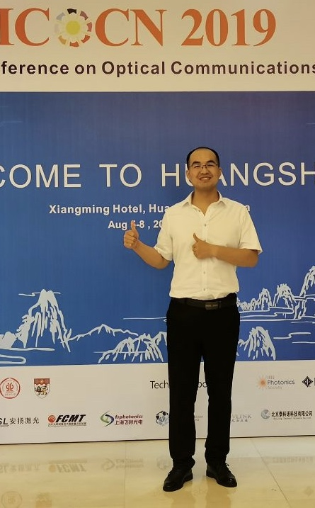 王亚辉物理与光电工程学院2018级博士研究生从事基于混沌布里渊光相干域分 析技术的分布式光纤温度、应变、振动监测研究 张倩物理与光电工程学院2019级博士研究生分布式光纤传感方向 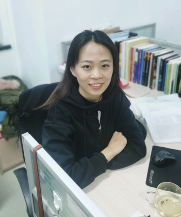 柴萌萌物理与光电工程学院2019级博士研究生光子集成宽带无时延混沌半导体激光器 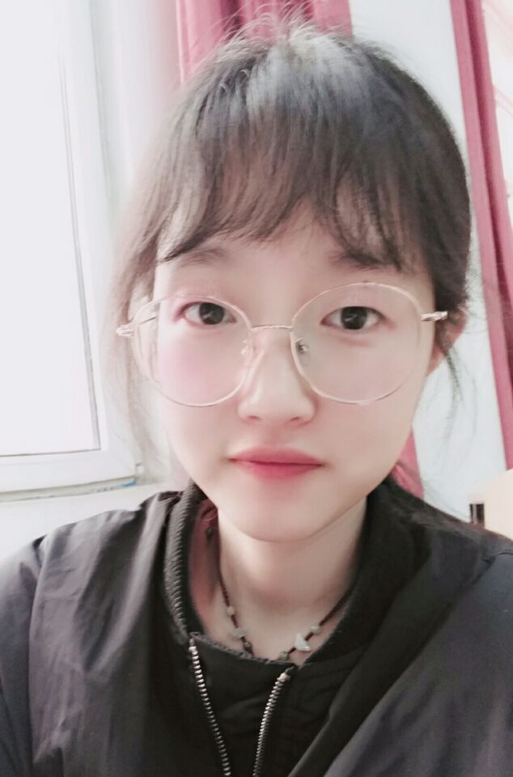 卫晓晶物理与光电工程学院2020级博士研究生产生宽带无时延混沌激光方向 王婷玉物理与光电工程学院2020级博士研究生分布式光纤传感，致力于实时监测并重构光纤周边振动和声场，实现连续分布式探测的新型传感技术
在读硕士生（29人） 2018级 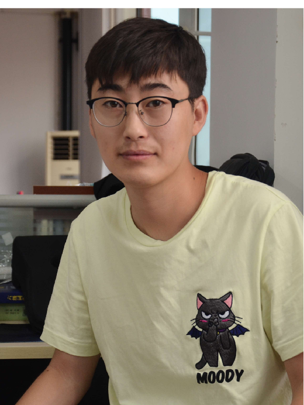 张晓程 研究方向:光纤传感 杨强 研究方向:宽带无时延混沌激光产生 余涛 研究方向:分布式光纤传感技术在电力电缆中的应用 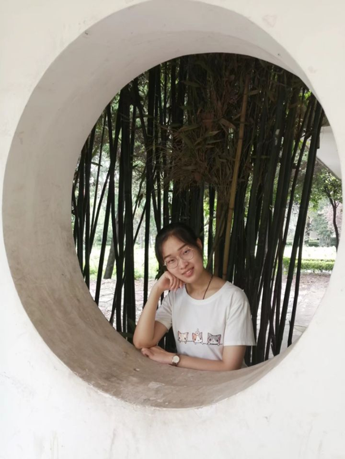 赵乐 研究方向:混沌布里渊动态应变测量 赵捷茹 研究方向:布里渊光时域分析技术 吴星亮研究方向:混沌布里渊动态光栅 李石川 研究方向:混沌时延特征的抑制 续文敏 研究方向:混沌半导体激光器驱动和温控源设计 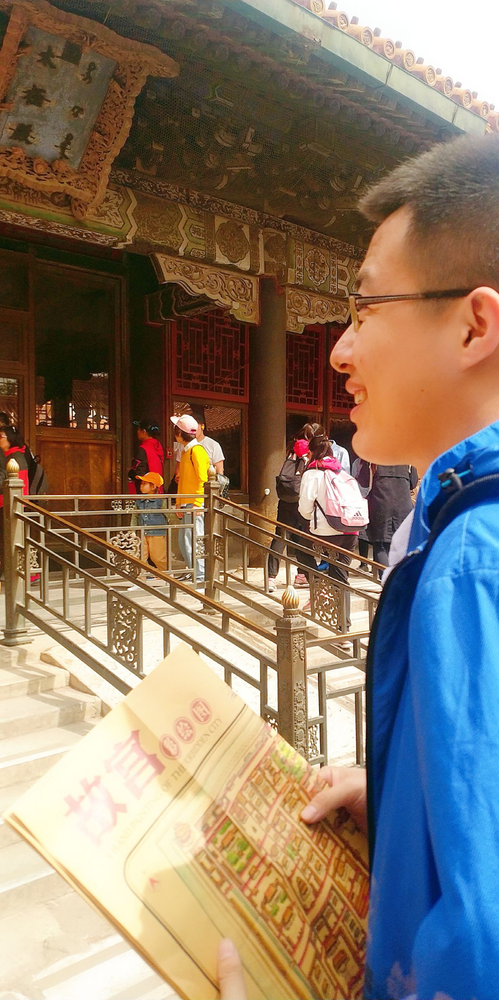 许扬研究方向:拉曼分布式光纤传感 2019级 朱毅诚 研究方向:混沌布里渊动态光栅 刘双双 研究方向:布里渊光时域分析技术 张雨婷 研究方向:无线传感 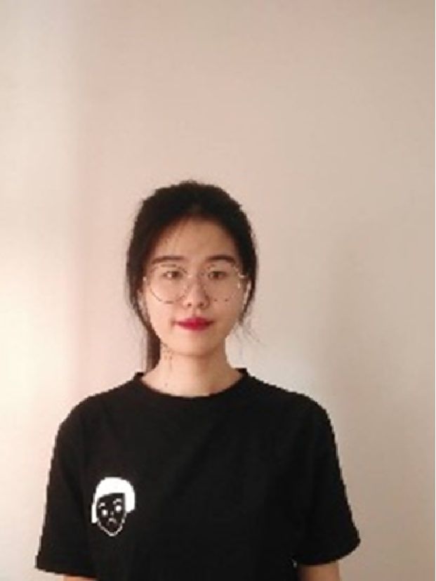 周新新 研究方向:混沌拉曼光纤传感 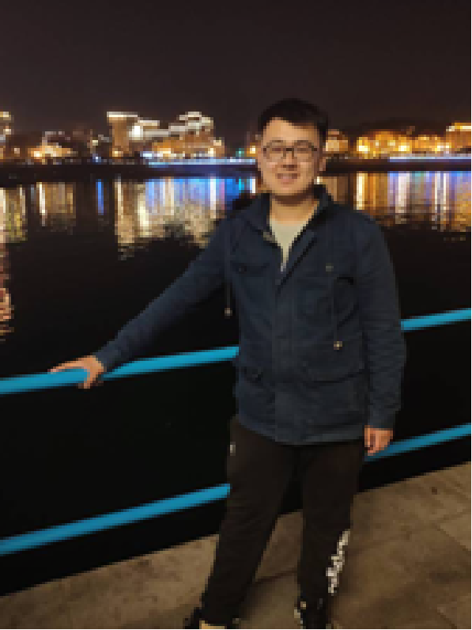 于福浩 研究方向:分布式光纤智能处理算法 胡鑫鑫 研究方向:混沌布里渊传感 陈红 研究方向:随机激光器与传感 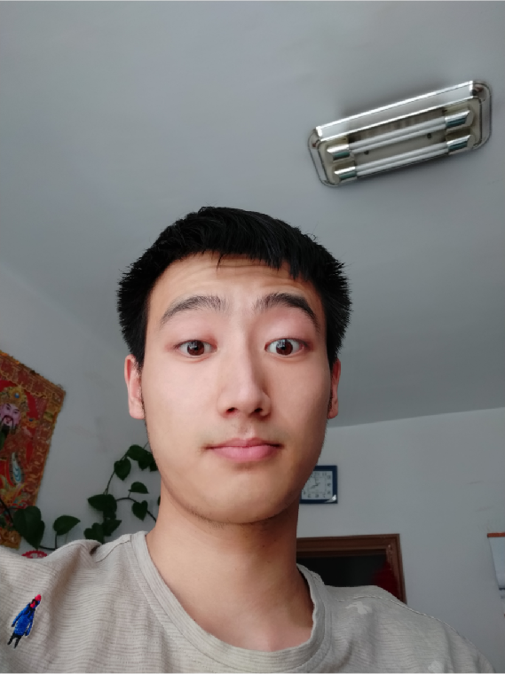 张博鑫 研究方向:光子集成混沌激光器 刘靖阳 研究方向:布里渊光时域分析技术 2020级 陈欢 研究方向:布里渊光时域分析 郭阳 研究方向:分布式布里渊光纤传感 李舒卉 研究方向:无线传感 李征如 研究方向:混沌拉曼光纤传感 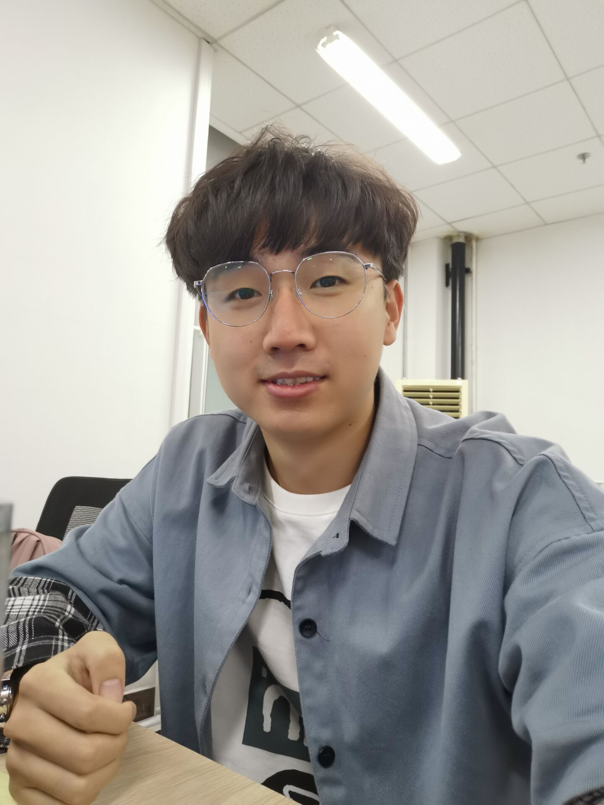 梁泽锋 研究方向：布里渊光时域反射技术 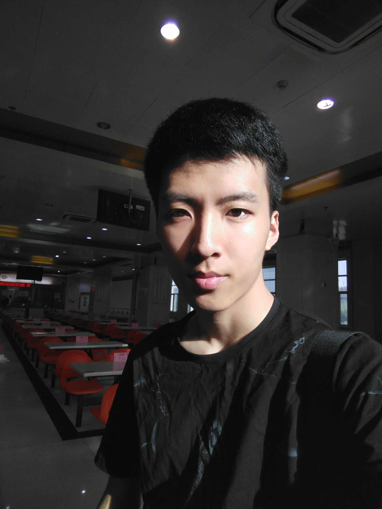 刘铭 研究方向:分布式光纤传感 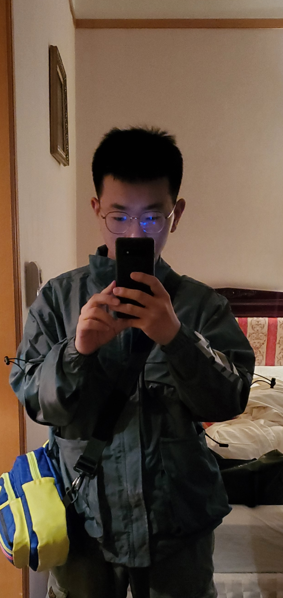 王彪 研究方向: 王晨懿 研究方向:分布式光线拉曼传感 王康博 研究方向:混沌布里渊动态光栅 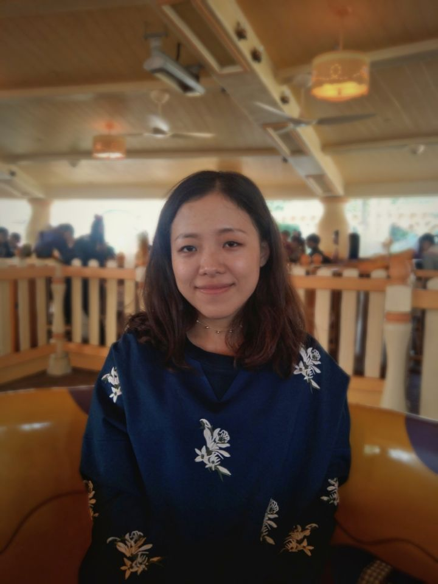 尹子彤 研究方向:分布式光线拉曼传感 冯凯 研究方向:分布式光线拉曼传感 毕业硕士生（28人） 吉永宁 马 喆 李 岚 柴 晶 许卫鹏 张永宁 刘 慧 黄 琦 刘瑞霞 李云亭 张明涛 蔺 璐 李 健 杨帅军 徐雨航 牛亚楠 李铸平 冯昌坤 吕天爽 孟 洁 于小雨 崔双义 闫宝强王 兴 李梦文 徐 浩 宋盈盈 武晨宇 学生获得奖励计划：（36人次） 国家奖学金8人：李健、黄琦、闫宝强、许扬、赵乐、杨强、赵婕茹，胡鑫鑫 全国电信奖学金1人：李健 牛憨笨光电奖学金3人：李健、张永宁、闫宝强 中国研究生创“芯”大赛“三等奖”3人：柴萌萌、杨强、徐浩 中国研究生电子设计大赛华北赛区二等奖3人：李健、余涛、许扬 中国研究生电子设计大赛华北赛区三等奖4人：王兴、续文敏、张雨婷、梁泽峰 全国光机电技术及系统学术会议学生优秀报告奖2人：李健、吕天爽 全国光学工程与光电子博士生论坛优秀博士生报告1人：王亚辉 山西省优秀硕士毕业论文1人：李梦文 太原理工大学优秀硕士毕业论文3人：李健、冯昌坤、闫宝强 太原理工大学优秀共产党员2人：李健、杨强 太原理工大学优秀研究生3人：张倩、李梦文、许扬 太原理工大学优秀毕业生、优秀学生干部2人：闫宝强、杨强